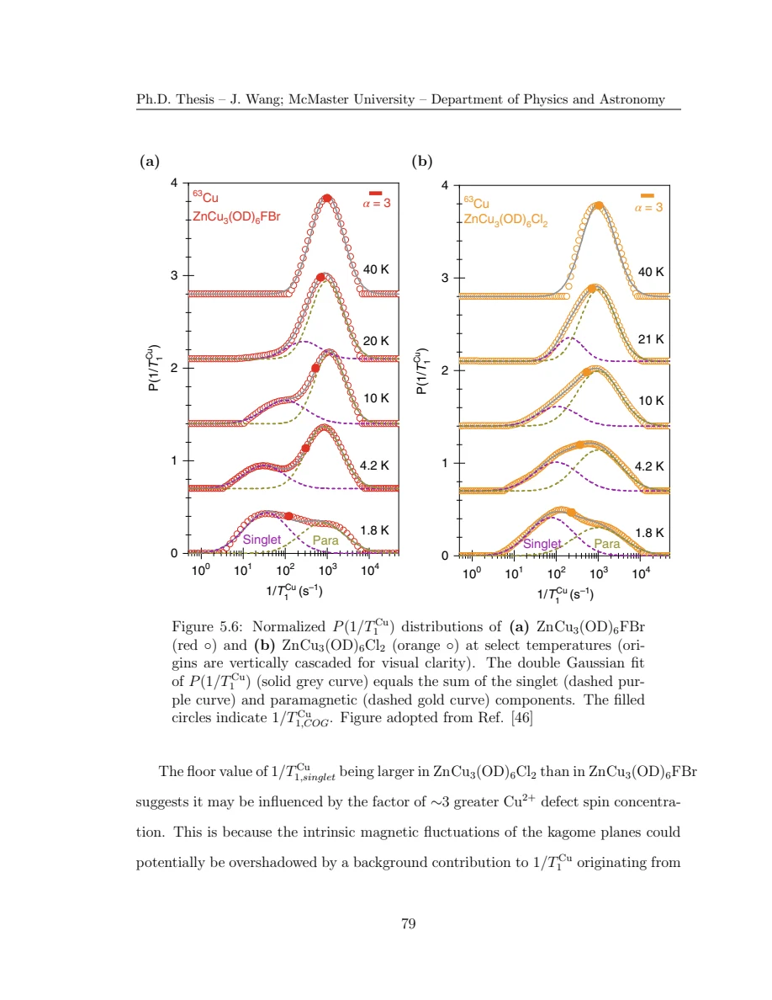

Wang · supplied source 2024 · chapter unit
7 · Cu NQR: singlet-like and paramagnetic regions
The observed Cu mixture is heterogeneous, and finite echo delay biases its inferred weights.
The question: Why can an apparently simple average conceal a partially gapped response?
Before you start: the terms you need
- Quantum spin liquid candidate: a material tested against a quantum-disordered model; a null ordering signal is insufficient identification.
- K: local resonance shift, sensitive to a coupling-weighted static susceptibility.
- 1/T₁: recovery rate that samples fluctuations in the probe frequency window.
- ILT: constrained, regularized inference of a relaxation-rate distribution from recovery data.
- log-rate density: probability is the area in d log₁₀(1/T₁), not peak height.
See → explain → check
Follow the idea in 2 pictures.
Picture 1 / 2
One average hides two responses
Look for: The slow population emerges alongside a persisting fast component.
Swipe across the picture to read every label, or enlarge it below.
- Slow singlet-like component
- Fast paramagnetic component
Source interpretations of resolved components, not two precisely known phases.
A shift in average rate need not describe every Cu site.
Check the original: Original PDF p. 91 · Original PDF p. 92 · Original PDF p. 93
Picture 2 / 2
Echo delay changes the visible mixture
Look for: A shorter T₂ suppresses a component before its recovery is measured.
Swipe across the picture to read every label, or enlarge it below.
- Fixed nuclei
- Finite echo delay
- Selected signal
Timing-selection schematic; the chemical number of nuclei does not change.
The apparent slow fraction rises when the faster-decaying component is missed.
Check the original: Original PDF p. 94 · Original PDF p. 96
Explain it back.
Try answering aloud before opening the explanation.
Why is Fsinglet an upper bound here?
The paramagnetic component has faster transverse decay and is relatively suppressed by finite τ, making the observed slow fraction too large.
What does a persistent fast branch imply for a homogeneous gap claim?
The observed ensemble retains fluctuating paramagnetic environments, so one uniformly gapped local response does not describe the measured mixture.
Go deeper Follow the full argument
Why use copper NQR
The Cu nucleus lies on the kagome spin site and strongly couples to its local environment. High-field powder spectra of spin-three-halves copper have a large orientation-dependent quadrupole complication. NQR probes the quadrupole transition without an applied static field and supplies a more practical recovery measurement. The source compares deuterated powder Zn-barlowite and herbertsmithite. Interlayer magnetic Cu defects are part of the real sample: the nominal material names must be distinguished from the reported nonideal compositions. Isotope peaks and bromine overlap also need correct assignment before attributing a signal to Cu dynamics.
Original PDF p. 84 · Original PDF p. 85 · Original PDF p. 87 · Original PDF p. 88
Read the split distributions before the characteristic rate
At higher temperatures, the inferred Cu rate distribution has a relatively narrow component near the paramagnetic scale, aside from the lattice-freezing region. Below roughly 30 K, a slower component develops while the faster component persists. The author fits the log-rate distributions with two Gaussian components and interprets the slow branch through local singlet formation with different excitation gaps. The characteristic stretched rate can move between branches as the weights change, even though it equals neither local component. Therefore an apparent power-law average does not establish that every Cu spin has the same gapless law, nor does a suppressed average establish a homogeneous singlet state.
Original PDF p. 89 · Original PDF p. 90 · Original PDF p. 91 · Original PDF p. 92 · Original PDF p. 93 · Original PDF p. 94 · Original PDF p. 95
The fraction is bounded by visibility
The thesis obtains Fsinglet from the fitted component areas. Its low-temperature estimate is roughly one-half and does not exceed about 60% in the reported window. Yet finite echo spacing preferentially suppresses paramagnetic Cu nuclei with faster transverse decay. The observed slow fraction is therefore an upper-bound estimate of the true fraction under the stated selection. The comparison of 6, 15 and 30 µs echoes directly demonstrates this bias. A selected NQR-peak frequency also need not have the same mixture as the integrated full spectrum. Keep these limits attached to every quoted fraction and distinguish spatially varying gaps from a universal gap parameter for the entire sample.
Original PDF p. 94 · Original PDF p. 95 · Original PDF p. 96
Translate the mathematics Essential equations and their meaning
Fsinglet,observed = Asinglet / (Asinglet + Apara)
Symbols: A: integrated fitted log-rate component weight at the selected acquisition conditions.
With faster T₂ loss of paramagnetic nuclei and peak-frequency sampling, the result is an observable upper-bound estimate rather than an exact total-spin fraction.
Original PDF p. 94 · Original PDF p. 95 · Original PDF p. 96
Read the evidence Guided original source pages

Original PDF p. 93

Original PDF p. 96
What the evidence supports—and where it stops
- Fractions remain dependent on echo/frequency visibility and deconvolution assumptions.
Source version, reading coverage and preservation
All substantive text in Chapters 1–7, the reprinted research article and numerical appendices read; original working kernels, equations and key result figures visually checked.
Reviewed body pages: 15, 16, 17, 18, 19, 20, 21, 22, 23, 24, 25, 26, 27, 28, 29, 30, 31, 32, 33, 34, 35, 36, 37, 38, 39, 40, 41, 42, 43, 44, 45, 46, 47, 48, 49, 50, 51, 52, 53, 54, 55, 56, 57, 58, 59, 60, 61, 62, 63, 64, 65, 66, 67, 68, 69, 70, 71, 72, 73, 74, 75, 76, 77, 78, 79, 80, 81, 82, 84, 85, 86, 87, 88, 89, 90, 91, 92, 93, 94, 95, 96, 97, 98, 99, 100, 101, 102, 103, 104, 105, 106, 107, 108, 109, 110, 111, 112, 113, 114, 115, 116, 117, 118, 119, 120, 121, 122, 123. Personal acknowledgements omitted from teaching content. Bibliographies and external supplements not independently re-read; only material actually present in the thesis is covered.
Source SHA-256: 80ad8aaad2ce3f48320bef046c30907939f8018990292aa5ebb7e5269d912da2. Original file bytes preserved locally; public scientific page images are rendered from that source.
Thesis - Wang - 2024 - Disordered spin liquids - NMR and inverse Laplace analysis.pdf